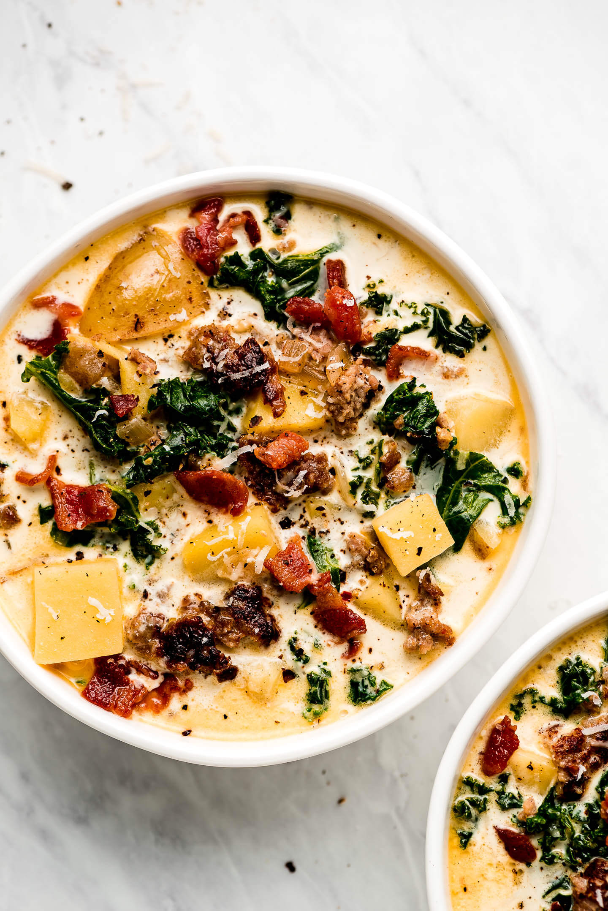

Better than Olive Garden Zuppa Toscana

Description
This Zuppa Toscana Soup is even better than Olive Garden's! It's full of ground sausage, potatoes, kale, cream, and topped with bacon and parmesan.
No need to go to Olive Garden to enjoy your favorite Italian soup, make it right at home! I promise, it's even better and you can make a whole pot for about the same price as one bowl. Serve it for family dinner or a luncheon with friends!
Ingredients
- 5 slices bacon, chopped
- 1 pound hot Italian Sausage, casing removed
- 1 large yellow or sweet onion, diced
- 4 cloves garlic, minced
- 5 yukon potatoes, diced into 1/2 inch cubes
- 6 cups water
- 2 tablespoons better than bouillon chicken base, (and or beef base)
- parmesan rind, (optional)
- 6 cups curly kale, stems removed, leaves roughly chopped
- 1 cup heavy whipping cream
- salt & pepper, to taste
- Parmigiano Reggiano, grated (for topping)
Instructions
- Cook bacon in a large Dutch oven or pot over medium heat. Remove with slotted spoon and let drain on a paper towel lined plate.
- Turn heat up to med-high, add sausage, and brown while braking up (about 5 minutes). Remove with slotted spoon onto another paper towel lined plate. Remove excess oil from pot, leaving ~2 tablespoons in the bottom.
- Reduce heat to medium, add onions and let them sweat until tender (about 10 minutes). Add the garlic and cook another 30-60 seconds.
- Add the potatoes, water, bouillon, and parmesan rind (optional) to the pot and bring to a boil over high heat. Reduce to medium heat and simmer for about 7-8 minutes or until potatoes are fork tender.
- Stir in the kale, cream, and browned sausage. Simmer for 2-3 minutes or until kale is wilted.
- Season with salt and pepper to taste and serve garnished with bacon and parmesan.